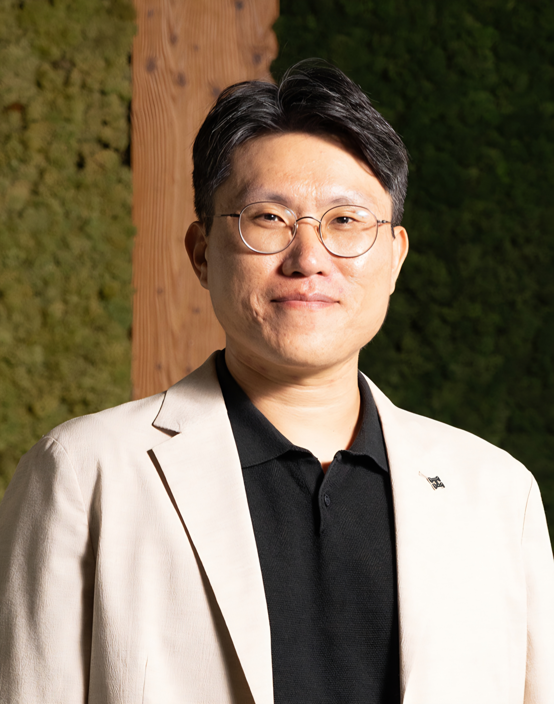
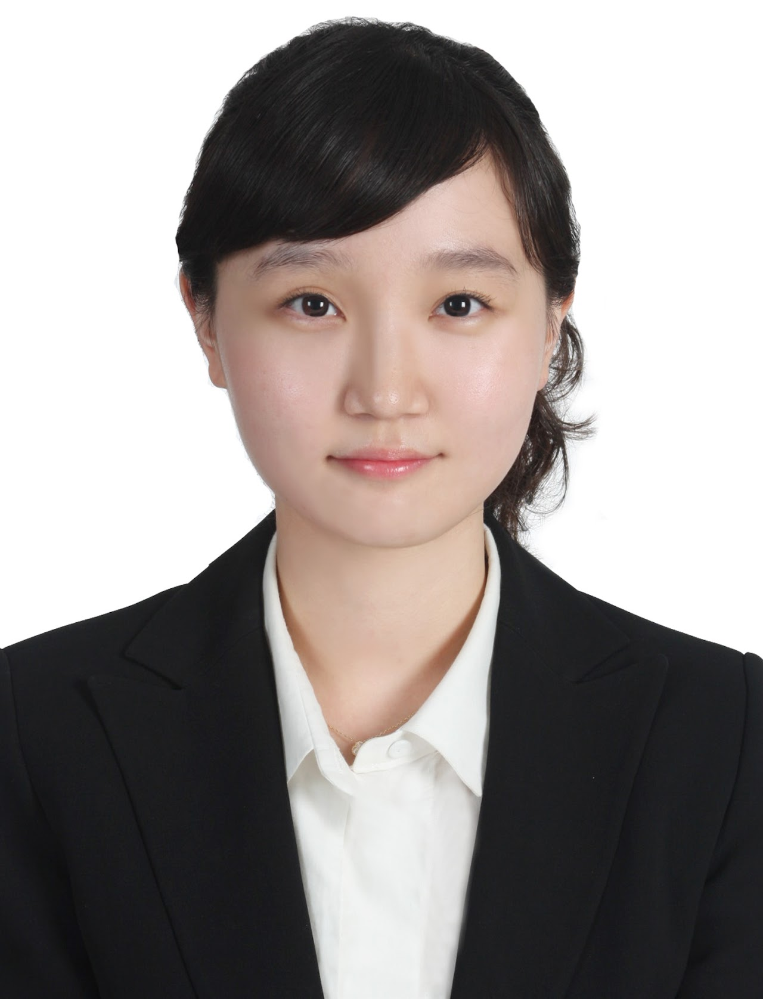
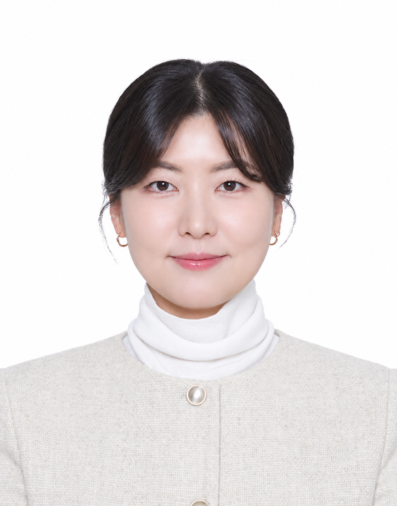
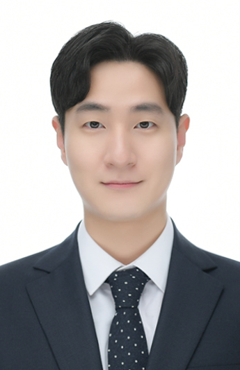
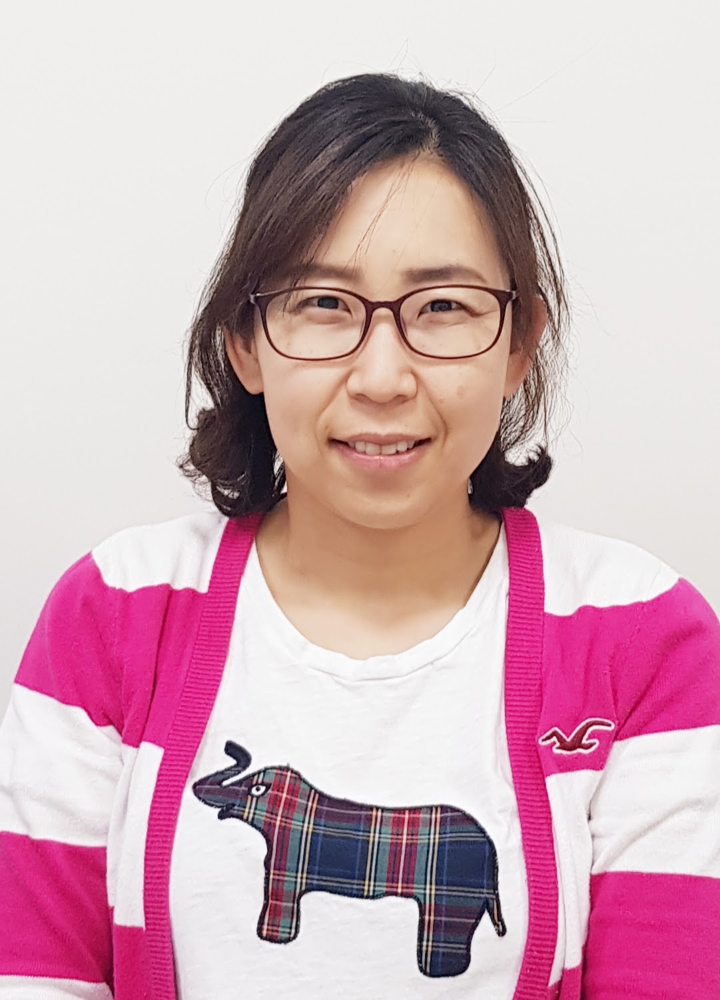
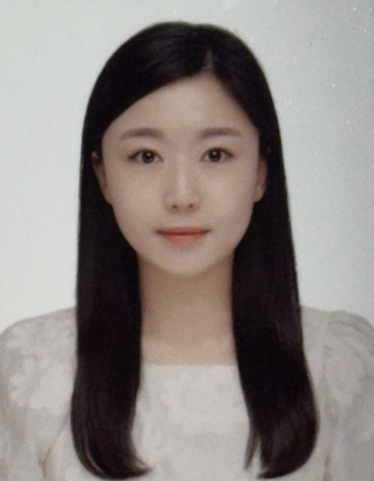
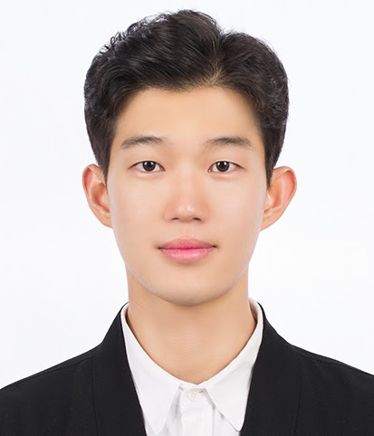

Sangkyu Lee Lab / Biomolecular Design Lab
People
The people behind the science.

Principal Investigator
Sangkyu Lee, Ph.D.
Junior Chief Investigator
Center for Memory and Glioscience
Institute for Basic Science (IBS)
Sangkyu Lee trained in biological sciences at KAIST and has worked at IBS since 2012. He has served as Junior Chief Investigator at the Center for Memory and Glioscience since July 2025.
Education
- 2005.03–2011.01
- Ph.D., Biological SciencesKAIST
- 2001.03–2005.02
- B.S., Biological SciencesKAIST
Professional experience
- 2025.07–Present
- Junior Chief InvestigatorInstitute for Basic Science (IBS)
- 2021.12–Present
- Adjunct ProfessorDepartment of Biomedical Engineering, UNIST
- 2026.09–Present
- ProfessorUniversity of Science and Technology (UST)
- 2021.03–2024.02
- ProfessorUniversity of Science and Technology (UST)
- 2023.09–2026.08
- Adjunct ProfessorDepartment of Biological Sciences, Sungkyunkwan University
- 2020.06–2025.06
- Senior Research FellowCenter for Cognition and Sociality, IBS
- 2018.01–2020.05
- Research Fellow (Tenure-Track)Center for Cognition and Sociality, IBS
- 2013.05–2017.12
- Research Fellow (Non-Tenure-Track)Center for Cognition and Sociality, IBS
- 2012.12–2013.04
- Postdoctoral ResearcherCenter for Cognition and Sociality, IBS
- 2011.03–2012.11
- Postdoctoral ResearcherBiological Sciences, KAIST
Our Team
We are a multidisciplinary team combining neuroscience, molecular engineering, imaging, electrophysiology, and behavioral approaches to develop new ways of understanding and manipulating the brain.

Dr. Shin Heun Kim
Senior Researcher
Engineering synaptic connections, mouse behavior, and in vivo two-photon imaging.

Dr. Hyoin Lee
Senior Researcher
Mapping synaptic connections, in vivo recording, and behavioral analyses.
Dr. Juhee Shin
Postdoctoral Research Associate
Molecular and cellular biology, in vivo experiments, and neuropathic pain.

Dr. Seungkyu Son
Postdoctoral Research Associate
Protein engineering, fluorescent indicators, and optogenetics.

Dr. Yeon Hee Kook
Postdoctoral Research Associate
Molecular and cellular biology and in vivo experiments.

Jihye Kim
Researcher
Molecular and cellular biology.

Young-Jin Choi
Graduate Student · UNIST
Molecular and cellular biology.
- Photo forthcoming
Jiwoo Jeong
Undergraduate Student
Chungnam National University
- Photo forthcoming
Yujeong Lim
Undergraduate Student
Chungnam National University
Alumni
- Daeun LeeM.S. Graduate
- Dong Yeop KangM.S. Graduate
- Seong Su WonResearcher
- Yun Ju LeeResearcher